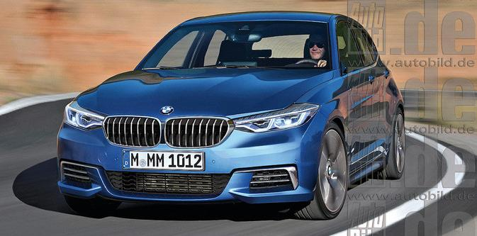

|  |
Koniec tylnego napędu w BMW - Dodano dnia 14-05-2015 przez Jarek
Nadszedł czas próby dla najwierniejszych fanów BMW. Vany, 3-cylindrowe silniki, napęd na przednie koła – w Monachium nie pozostał już kamień na kamieniu. A zapowiada się, że to jeszcze nie koniec! Za 3 lata nastąpi koniec tylnego napędu w serii 1. Jednocześnie zniknie połączenie kompakt plus 6-cylindrowy silnik – 3-litrowa jednostka nie zmieści się przecież poprzecznie w komorze silnika. |
Na tym jednak niebiesko-biała rewolucja się nie kończy. Zgodnie z dzisiejszym stanem wiedzy z oferty zniknie też 3-drzwiowy wariant serii 1. Powód? Zbyt słabe wyniki sprzedaży. Na najtańszą wersję „jedynki” w zeszłym roku zdecydowało się zaledwie 20 tys. klientów na całym świecie. Niejako w zastępstwie zostanie rozszerzona paleta serii 2 Gran Coupé.